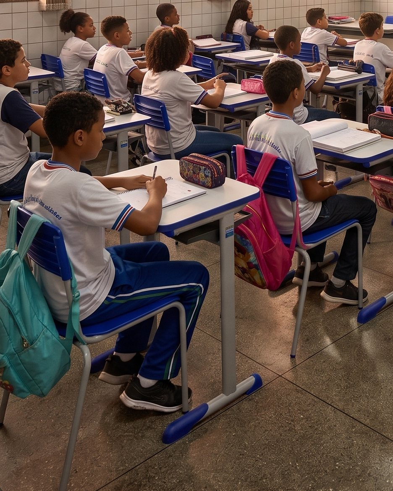

Nenhum item nesta frente ainda.

Sua equipe adere.
A gente entrega, monta e treina.
Sem abrir novo processo licitatório e sem custo para montar o projeto.

Cada produto pertence a uma ata. Sua equipe escolhe item por item, monta a lista do município e a Atto devolve o projeto com valores e prazo.
Nenhum item nesta frente ainda.
Sem abrir novo processo licitatório e sem custo para montar o projeto.